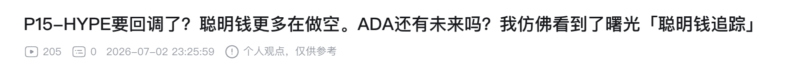
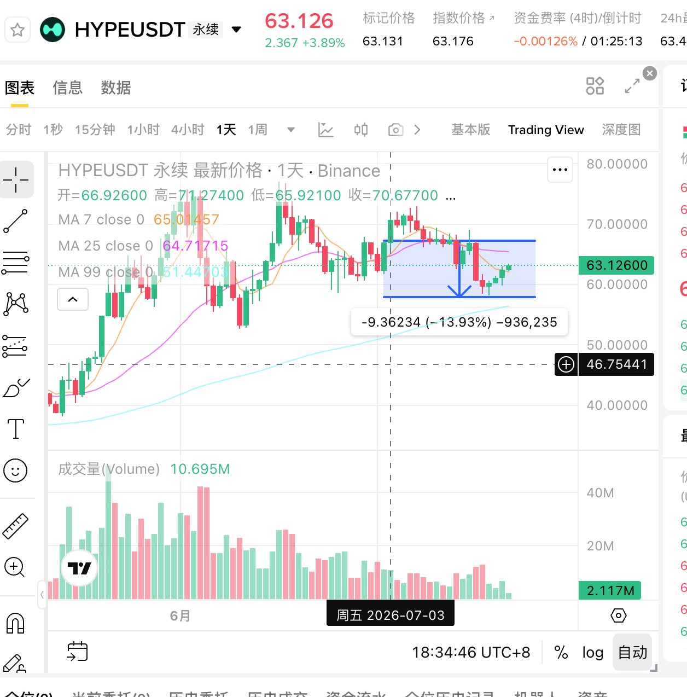
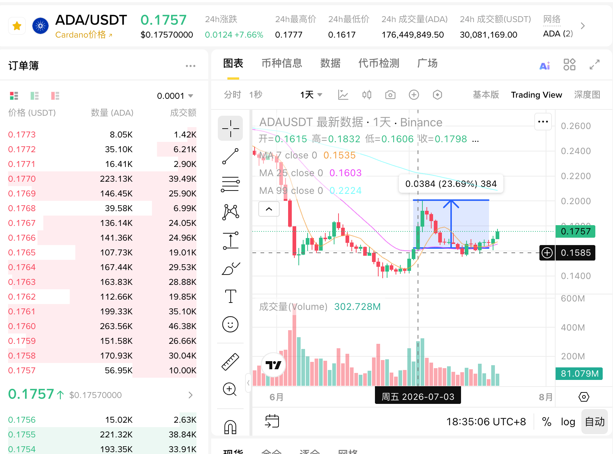

#1 · 未署名 · 2026-07-24T23:45:40+08:00 这就是数据分析的魅力！ 前段时间我们分析了聪明钱中hype做空的多，ada做多的多。   并不是说聪明钱分析就一定可靠了，我也就是分析着玩玩当一个乐子，但我实际并不做任何操作。 最近也看到一些传统股市的事情，就是有人开会员群喊牛市还在，结果群友盲目相信重仓爆仓的小故事。 谁也不要相信，不止币圈，不止股市。 这个视频纯属自我安慰，自娱自乐，不构成任何投资建议。